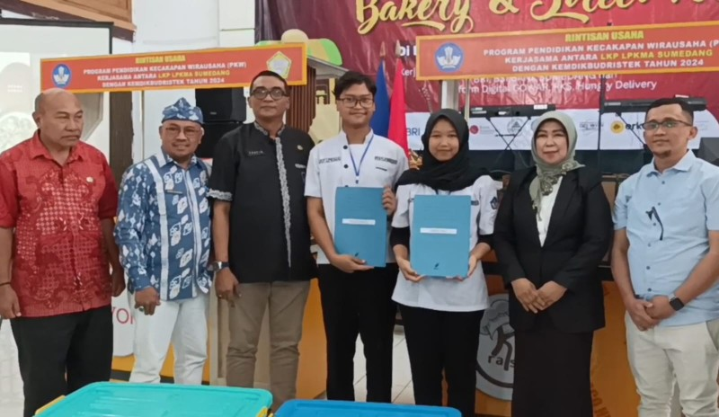
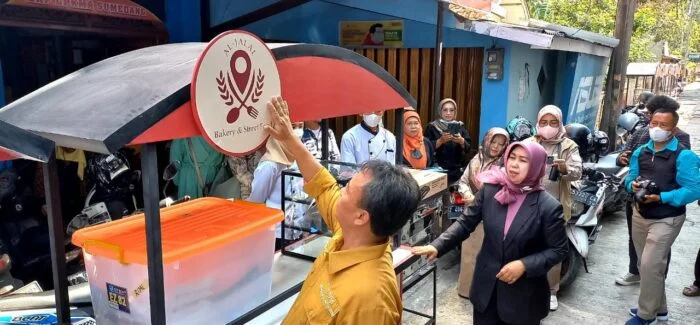

Lembaga Pendidikan Komputer dan Manajemen Actual disingkat LPKMA atau yang sering kita kenal dengan nama ACTUAL berdiri pada tanggal 01 Juni 1987.
ACTUAL COLLEGE berdiri dibawah pimpinan Bapak Suparlan, SE yang beralamat di Jalan R.A Kartini No.13 Sumedang dengan izin operasional No.849/W.9/KS/1987.
Pada tahun 1987 status kampus masih kontrak dengan ukuran 12 x 10 meter yang terbagi menjadi ruang kelas, kantor, mushola, WC dan dapur.

